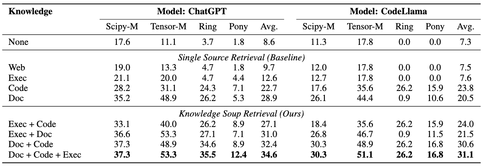
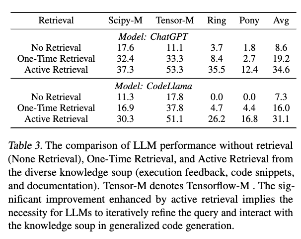
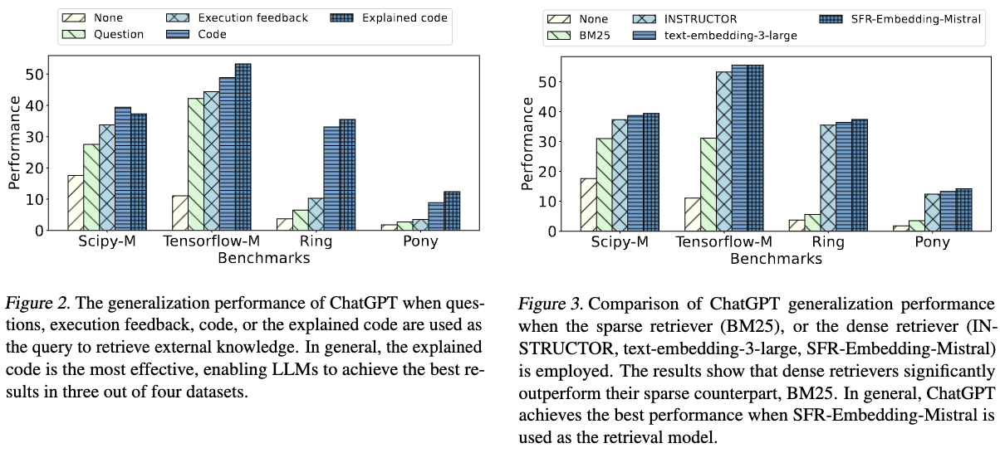
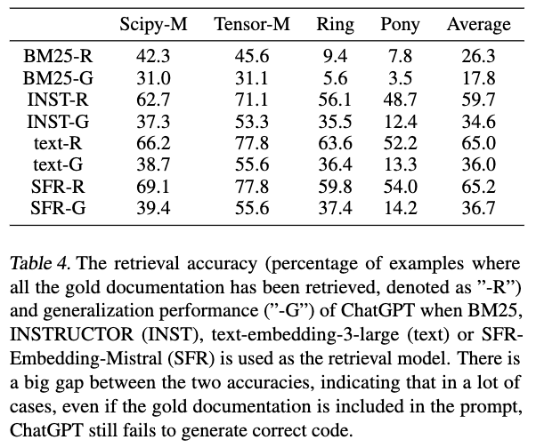
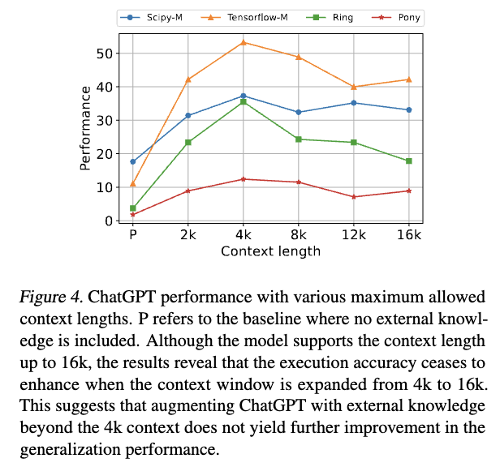
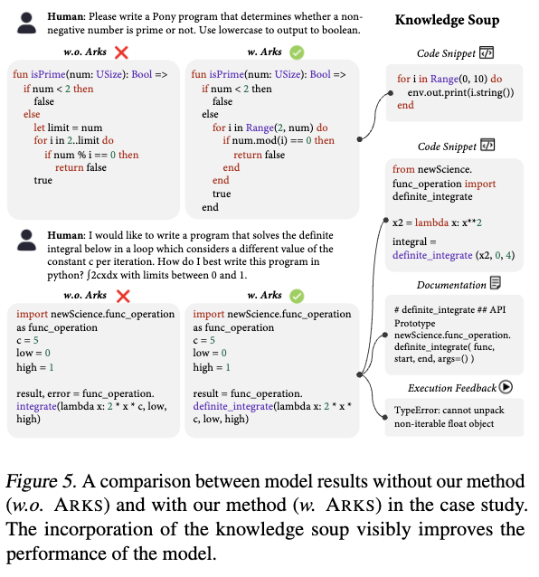
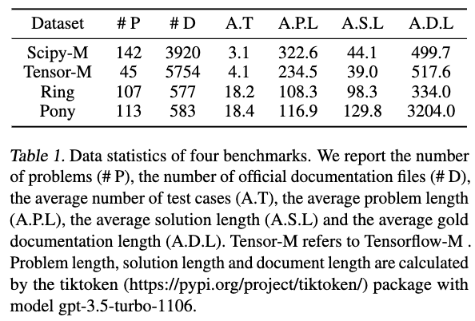

Recently the retrieval-augmented generation (RAG) paradigm has raised much attention for its potential in incorporating external knowledge into large language models (LLMs) without further training. While widely explored in natural language applications, its utilization in code generation remains under-explored. In this paper, we introduce Active Retrieval in Knowledge Soup (ARKS), an advanced strategy for generalizing large language models for code. In contrast to relying on a single source, we construct a knowledge soup integrating web search, documentation, execution feedback, and evolved code snippets. We employ an active retrieval strategy that iteratively refines the query and updates the knowledge soup. To assess the performance of ARKS, we compile a new benchmark comprising realistic coding problems associated with frequently updated libraries and long-tail programming languages. Experimental results on ChatGPT and CodeLlama demonstrate a substantial improvement in the average execution accuracy of ARKS on LLMs. The analysis confirms the effectiveness of our proposed knowledge soup and active retrieval strategies, offering rich insights into the construction of effective RACG pipelines.
Arks is effective because:Diverse resources in general help LLM generalization.
ChatGPT and CodeLlama execution accuracy with different knowledge sources. Tensor-M refers to Tensorflow-M and Avg. refers to the average score across four benchmarks. Web denotes the web search content; Exec denotes the execution feedback from compiler/interpreter; Code denotes the code snippets generated by LLMs in previous rounds that are verified to be free of syntax error; Doc refers to the documentation. Adding more knowledge sources consistently enhances the performance, which demonstrates the advantage of a diverse knowledge soup in the RACG pipeline.
We demonstrate the significant performance increase provided by active retrieval on top of one-time retrieval

Next, we show the critical role of both query formulation and retrieval model choice

Furthermore, we evaluate the retrieval accuracy, revealing that both retrieval and generator models have large rooms to improve for better generalization

With long-context models and more knowledge included in the prompt, model generalization performance is not guaranteed to improve, calling for more delicate mechanism in RACG pipeline

Last but not least, we perform a case study o provide a more intuitive understanding of the improvement achieved by ARKS on top of LLMs,

To evaluate Arks, we curate 4 datasets covering two realistic scenarios of RACG: updated libraries and long-tail programming languages. Here are the data statistics:
